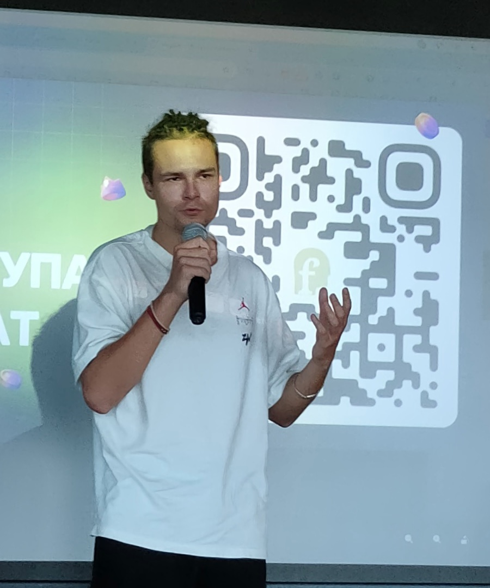
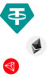

Нужно перевести деньги
Часть капитала нужно перевести за границу, между странами или просто вывести из привычной банковской системы.
30–60 минут · online · без обязательств
Бесплатная консультация8 недель личного обучения использования криптовалют — 1:1 звонки, без видео уроков и потоковых zoom лекций

Неважно, деньги уже в крипте или вы только планируете ими пользоваться. Вопрос обычно один: что именно сейчас происходит и где здесь можно ошибиться?
Часть капитала нужно перевести за границу, между странами или просто вывести из привычной банковской системы.
USDT или другие активы уже лежат на бирже или кошельке, но пока непонятно, как их безопасно хранить и перемещать.
Покупка недвижимости, автомобиля, перевод накоплений или другой платёж, где цена ошибки уже ощутима.
До первой серьёзной операции хочется понять кошельки, сети, seed-фразы, комиссии и почему всё это работает не так, как привычный банк.
Иногда достаточно не понимать, что именно происходит на одном из этапов операции — перевода, обмена или подписи.
Перевод денег выглядит знакомо.
Правила — совсем другие.
Теорию можно прочитать где угодно. Сложности начинаются в момент, когда вы один на один со своим экраном и своей суммой.

8 недель
Личной связи в чате
Основной режим — будни, рабочее время. По выходным доступность ниже. Между звонками вы изучаете материалы, которые я готовлю под ваши задачи.
16
Личных созвонов 1:1
Два созвона в неделю по часу, только вы и я. Вы заранее готовите вопросы: ситуация, интерфейс, подготовка перевода, хранение.
Как устроены блокчейн,
кошельки, сети и комиссии
Разбираем на созвонах: сложное — нормальным языком и в том порядке, в котором вы столкнётесь с этим на практике.
Собственные операции
на небольших суммах
Покупка, вывод, кошелёк, тестовый перевод, проверка через explorer — всё делаете вы сами, пока цена ошибки минимальна.
Человек рядом,
пока вы набираете опыт
Личные созвоны, чат между ними и возможность подключиться в момент важной операции — чтобы первые серьёзные действия не приходилось делать в одиночку.
Не для того, чтобы стать экспертом в каждой области. Для того, чтобы понимать, что вообще существует, зачем это нужно и как связано между собой.
Выберите элемент карты
Каждый блок мы разбираем на языке «что это, зачем существует и где вы можете с этим столкнуться» — без инвестиционных рекомендаций.
Каждая неделя — личные созвоны и практика. Идём от ваших задач, но есть и общий список тем: их разберём обязательно — и в теории, и на практике. Нажмите на неделю, чтобы раскрыть содержание.
Базовый словарь и общая картина: как обычные деньги превращаются в USDT и как перемещаются дальше.
Что разберём
После недели
Базовый язык крипты и логика движения средств: от денег до биржи, сети и своего кошелька.
Практика: создать аккаунт Bybit, пройти KYC, включить 2FA и разобраться в разделах.
Централизованная биржа руками: безопасность аккаунта, P2P, покупка, переводы и вывод on-chain.
Что разберём
После недели
Купить и обменять крипту на Bybit, понимать счета и подготовить ввод или вывод.
Практика: пополнить биржу через P2P небольшой суммой — с показом экрана.
От хранения на бирже к своему кошельку: кто на самом деле контролирует активы.
Что разберём
После недели
Свой кошелёк создан, восстановление проверено, разница с хранением на бирже понятна.
Практика: создать wallet, сохранить seed phrase, проверить восстановление, вывести небольшую сумму с Bybit, найти её в explorer и отправить часть обратно.
Карта индустрии: что вообще существует, зачем нужно и как связано между собой.
Что разберём
После недели
Термины из CoinMarketCap, сервисов и новостей получают место на общей карте.
Это обзорный модуль «что есть что», а не инвестиционные рекомендации и не инструкция, что покупать.
Через Bitcoin и Ethereum: почему blockchain работает без банка и кто держит сеть.
Что разберём
После недели
Чем отличаются Bitcoin, Ethereum и другие сети и откуда берётся их безопасность.
Работа on-chain: как DEX общается с кошельком и что проверить до подписи.
Что разберём
После недели
Проверить площадку и токен, сделать swap, понимая, что именно подписываете.
Практика: проверить DEX и token contract, подключить wallet, настроить swap, проверить price impact и slippage, обменять $10–20, найти транзакцию в explorer и проверить approvals.
Интерфейс биржи и график — без обучения трейдингу.
Что разберём
После недели
Читать график, свечи, стакан, пары и типы заявок — без трейдинга и теханализа.
Практика: открыть небольшую spot-сделку через limit order и посмотреть, как заявка исполняется.
Крипторынок в контексте: циклы, макроэкономика, регулирование и системные риски.
Что разберём
После недели
Видеть крипторынок частью глобальной финансовой системы и знать, что отслеживать.
Блок «где рынок находится сейчас», а также юридическая и налоговая информация подаются как актуальный на момент занятия обзор, а не как постоянная истина или персональная юридическая либо инвестиционная рекомендация.
Покупать и продавать USDT и обменивать на любой другой актив
Пополнить биржу или обменник — и понимать, что именно вы купили.
Правильно выбирать сеть перед переводом
Один и тот же токен живёт в разных сетях, и между собой они не сообщаются.
Вывести средства с биржи
Выбрать сеть, проверить адрес и не потерять сумму при переводе.
Читать blockchain explorer
Видеть свою операцию в сети и понимать, на каком она этапе.
Создать non-custodial wallet
Анонимный кошелёк, доступ к которому есть только у вас — и ни у кого больше.
Хранить seed phrase
Двенадцать слов, которые нельзя фотографировать, пересылать и держать в облаке.
Положить деньги под 2–4 % годовых в долларе, прямо на своём кошельке
Как это работает, какие есть риски и когда этим стоит пользоваться.
Завести crypto-карту и платить ей в интернете или за границей
Тратить криптовалюту напрямую, без обмена вручную перед каждой покупкой.
Видеть базовые риски
Какие разрешения вы выдаёте кошельком и как их отзывать.
Понимать устройство индустрии
Биржи, кошельки, сети, мосты — что за что отвечает и где чьи деньги.
Иметь собственную схему
Где лежат активы, каким маршрутом ходят и что делать, если что-то пошло не так.
Теорию можно прочитать где угодно. Сложности начинаются в момент, когда вы один на один со своим экраном и своей суммой.
Два созвона в неделю по часу, только вы и я. Вы заранее готовите вопросы: ситуация, интерфейс, подготовка перевода, хранение.
Основной режим — будни, рабочее время. По выходным доступность ниже. Не 24/7, но без вопросов без ответа.
Кто ведёт программу
Я несколько лет работаю внутри Web3 — не только как пользователь криптовалюты, но и как человек, который создаёт продукты для этой индустрии.
KERBER®
Руководитель digital-агентства
11+ лет в дизайне и разработке крупных цифровых продуктов. Брендинг, стратегия и UI/UX — значительная часть клиентов работает в Web3 и финтехе.
 TADSАйдентика и платформа для B2B-рекламы в Telegram Mini Apps
TADSАйдентика и платформа для B2B-рекламы в Telegram Mini Apps TON.POINTБренд, упаковка мероприятий и сайт для международных Web3-событий
TON.POINTБренд, упаковка мероприятий и сайт для международных Web3-событий Twelve DataUX/UI и дизайн-система для провайдера финансовых API
Twelve DataUX/UI и дизайн-система для провайдера финансовых API Genesis MobilityUX и мобильное приложение для аренды автомобилей
Genesis MobilityUX и мобильное приложение для аренды автомобилей IKEAАйдентика и сайт для проекта по защите окружающей среды
IKEAАйдентика и сайт для проекта по защите окружающей среды8 личных созвонов по часу
16 личных созвонов по часу
Восемь недель работы со мной лично. Стоимость и условия разбираем на звонке — сначала нужно понять, подходит ли вам этот формат.
Личное сопровождение — восемь недель работы один на один.
16 личных созвонов по часу
Что входит
Состав программы, сроки, порядок переноса созвонов и условия участия разбираем на первом звонке — до того, как о чём-то договариваться.
Как устроена криптоиндустрия и что означают основные термины.
Самостоятельно покупать, хранить, переводить и проверять операции.
Во время программы иметь рядом человека, которому можно задать вопрос и показать ситуацию.
Познакомимся, разберём вашу ситуацию и задачи и поймём, подходит ли вам этот формат.

 5 % годовых
5 % годовых